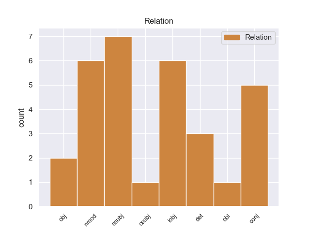
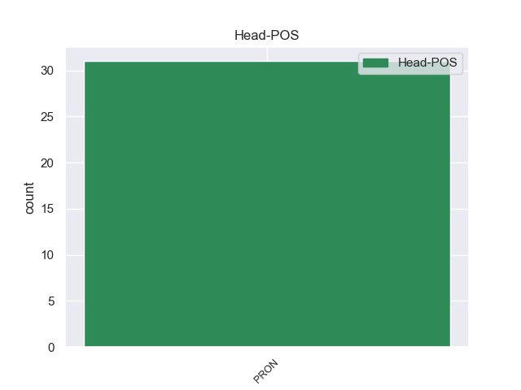
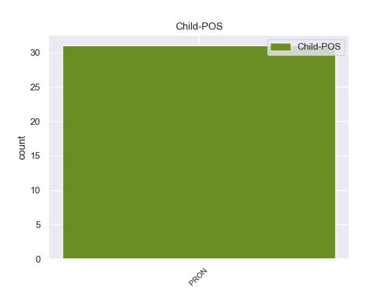

Distribution of features within this leaf



Agreement Rules sorted by frequency.
- When the dependent token is the conjunct(conj) of the head token,
1 El _ _ _ _ 0 _ _ _
2 INI _ _ _ _ 0 _ _ _
3 cumplía _ _ _ _ 0 _ _ _
4 así _ _ _ _ 0 _ _ _
5 con _ _ _ _ 0 _ _ _
6 una _ _ _ _ 0 _ _ _
7 doble _ _ _ _ 0 _ _ _
8 función _ _ _ _ 0 _ _ _
9 : _ _ _ _ 0 _ _ _
10 la él PRON _ Case=Acc|Gender=Fem|Number=Sing|Person=3|PrepCase=Npr|PronType=Prs 0 _ _ _
11 de _ _ _ _ 0 _ _ _
12 llevar _ _ _ _ 0 _ _ _
13 el _ _ _ _ 0 _ _ _
14 desarrollo _ _ _ _ 0 _ _ _
15 a _ _ _ _ 0 _ _ _
16 las _ _ _ _ 0 _ _ _
17 zonas _ _ _ _ 0 _ _ _
18 rurales _ _ _ _ 0 _ _ _
19 y _ _ _ _ 0 _ _ _
20 la él PRON _ Case=Acc|Gender=Fem|Number=Sing|Person=3|PrepCase=Npr|PronType=Prs 10 conj _ _
21 de _ _ _ _ 0 _ _ _
22 recuperar _ _ _ _ 0 _ _ _
23 a _ _ _ _ 0 _ _ _
24 las _ _ _ _ 0 _ _ _
25 culturas _ _ _ _ 0 _ _ _
26 indígenas _ _ _ _ 0 _ _ _
27 aquellas _ _ _ _ 0 _ _ _
28 características _ _ _ _ 0 _ _ _
29 que _ _ _ _ 0 _ _ _
30 pudieran _ _ _ _ 0 _ _ _
31 ser _ _ _ _ 0 _ _ _
32 integradas _ _ _ _ 0 _ _ _
33 a _ _ _ _ 0 _ _ _
34 el _ _ _ _ 0 _ _ _
35 patrimonio _ _ _ _ 0 _ _ _
36 cultural _ _ _ _ 0 _ _ _
37 de _ _ _ _ 0 _ _ _
38 la _ _ _ _ 0 _ _ _
39 nación _ _ _ _ 0 _ _ _
40 . _ _ _ _ 0 _ _ _
1 En _ _ _ _ 0 _ _ _
2 lo él PRON _ Case=Acc|Gender=Masc|Number=Sing|Person=3|PrepCase=Npr|PronType=Prs 20 nmod _ _
3 que _ _ _ _ 0 _ _ _
4 respecta _ _ _ _ 0 _ _ _
5 a _ _ _ _ 0 _ _ _
6 la _ _ _ _ 0 _ _ _
7 pesca _ _ _ _ 0 _ _ _
8 propiamente _ _ _ _ 0 _ _ _
9 dicha _ _ _ _ 0 _ _ _
10 , _ _ _ _ 0 _ _ _
11 la _ _ _ _ 0 _ _ _
12 que _ _ _ _ 0 _ _ _
13 actualmente _ _ _ _ 0 _ _ _
14 se _ _ _ _ 0 _ _ _
15 ve _ _ _ _ 0 _ _ _
16 más _ _ _ _ 0 _ _ _
17 directamente _ _ _ _ 0 _ _ _
18 perjudicada _ _ _ _ 0 _ _ _
19 es _ _ _ _ 0 _ _ _
20 la él PRON _ Case=Acc|Gender=Fem|Number=Sing|Person=3|PrepCase=Npr|PronType=Prs 0 _ _ _
21 de _ _ _ _ 0 _ _ _
22 artes _ _ _ _ 0 _ _ _
23 fijos _ _ _ _ 0 _ _ _
24 . _ _ _ _ 0 _ _ _
1 No _ _ _ _ 0 _ _ _
2 éramos _ _ _ _ 0 _ _ _
3 muchos _ _ _ _ 0 _ _ _
4 , _ _ _ _ 0 _ _ _
5 muchos _ _ _ _ 0 _ _ _
6 menos _ _ _ _ 0 _ _ _
7 que _ _ _ _ 0 _ _ _
8 los él PRON _ Case=Acc|Gender=Masc|Number=Plur|Person=3|PrepCase=Npr|PronType=Prs 0 _ _ _
9 que _ _ _ _ 0 _ _ _
10 hoy _ _ _ _ 0 _ _ _
11 nos _ _ _ _ 0 _ _ _
12 encontramos _ _ _ _ 0 _ _ _
13 presentes _ _ _ _ 0 _ _ _
14 , _ _ _ _ 0 _ _ _
15 los el PRON _ Case=Acc|Gender=Masc|Number=Plur|Person=3|PrepCase=Npr|PronType=Prs 8 nsubj _ _
16 que _ _ _ _ 0 _ _ _
17 asistimos _ _ _ _ 0 _ _ _
18 a _ _ _ _ 0 _ _ _
19 la _ _ _ _ 0 _ _ _
20 presentación _ _ _ _ 0 _ _ _
21 de _ _ _ _ 0 _ _ _
22 este _ _ _ _ 0 _ _ _
23 nuevo _ _ _ _ 0 _ _ _
24 reglamento _ _ _ _ 0 _ _ _
25 . _ _ _ _ 0 _ _ _
Disagree Examples:
1 Por _ _ _ _ 0 _ _ _
2 lo _ _ _ _ 0 _ _ _
3 tanto _ _ _ _ 0 _ _ _
4 , _ _ _ _ 0 _ _ _
5 si _ _ _ _ 0 _ _ _
6 fuésemos _ _ _ _ 0 _ _ _
7 29 _ _ _ _ 0 _ _ _
8 en _ _ _ _ 0 _ _ _
9 esta _ _ _ _ 0 _ _ _
10 sala _ _ _ _ 0 _ _ _
11 podríamos _ _ _ _ 0 _ _ _
12 votar _ _ _ _ 0 _ _ _
13 y _ _ _ _ 0 _ _ _
14 nadie _ _ _ _ 0 _ _ _
15 podría _ _ _ _ 0 _ _ _
16 impedírn _ _ _ _ 0 _ _ _
17 os tú PRON _ Case=Acc,Dat|Number=Plur|Person=2|PrepCase=Npr|PronType=Prs 0 _ _ _
18 lo él PRON _ Case=Acc|Gender=Masc|Number=Sing|Person=3|PrepCase=Npr|PronType=Prs 17 obj _ _
19 pero _ _ _ _ 0 _ _ _
20 como _ _ _ _ 0 _ _ _
21 somos _ _ _ _ 0 _ _ _
22 más _ _ _ _ 0 _ _ _
23 de _ _ _ _ 0 _ _ _
24 32 _ _ _ _ 0 _ _ _
25 , _ _ _ _ 0 _ _ _
26 ¡ _ _ _ _ 0 _ _ _
27 no _ _ _ _ 0 _ _ _
28 podemos _ _ _ _ 0 _ _ _
29 votar _ _ _ _ 0 _ _ _
30 ! _ _ _ _ 0 _ _ _
1 La _ _ _ _ 0 _ _ _
2 misma _ _ _ _ 0 _ _ _
3 ha _ _ _ _ 0 _ _ _
4 exaltado _ _ _ _ 0 _ _ _
5 en _ _ _ _ 0 _ _ _
6 particular _ _ _ _ 0 _ _ _
7 la _ _ _ _ 0 _ _ _
8 conexión _ _ _ _ 0 _ _ _
9 entre _ _ _ _ 0 _ _ _
10 estas _ _ _ _ 0 _ _ _
11 dos _ _ _ _ 0 _ _ _
12 fechas _ _ _ _ 0 _ _ _
13 considerando _ _ _ _ 0 _ _ _
14 que _ _ _ _ 0 _ _ _
15 hay _ _ _ _ 0 _ _ _
16 que _ _ _ _ 0 _ _ _
17 valorizar _ _ _ _ 0 _ _ _
18 lo _ _ _ _ 0 _ _ _
19 mejor _ _ _ _ 0 _ _ _
20 posible _ _ _ _ 0 _ _ _
21 la _ _ _ _ 0 _ _ _
22 articulación _ _ _ _ 0 _ _ _
23 entre _ _ _ _ 0 _ _ _
24 las _ _ _ _ 0 _ _ _
25 orientaciones _ _ _ _ 0 _ _ _
26 generales _ _ _ _ 0 _ _ _
27 de _ _ _ _ 0 _ _ _
28 política _ _ _ _ 0 _ _ _
29 económica _ _ _ _ 0 _ _ _
30 y _ _ _ _ 0 _ _ _
31 la _ _ _ _ 0 _ _ _
32 coordinación _ _ _ _ 0 _ _ _
33 de _ _ _ _ 0 _ _ _
34 los _ _ _ _ 0 _ _ _
35 distintos _ _ _ _ 0 _ _ _
36 procesos _ _ _ _ 0 _ _ _
37 que _ _ _ _ 0 _ _ _
38 los _ _ _ _ 0 _ _ _
39 Consejos _ _ _ _ 0 _ _ _
40 han _ _ _ _ 0 _ _ _
41 ido _ _ _ _ 0 _ _ _
42 adoptando _ _ _ _ 0 _ _ _
43 a _ _ _ _ 0 _ _ _
44 lo _ _ _ _ 0 _ _ _
45 largo _ _ _ _ 0 _ _ _
46 de _ _ _ _ 0 _ _ _
47 el _ _ _ _ 0 _ _ _
48 tiempo _ _ _ _ 0 _ _ _
49 , _ _ _ _ 0 _ _ _
50 y _ _ _ _ 0 _ _ _
51 con _ _ _ _ 0 _ _ _
52 ello él PRON _ Case=Acc,Nom|Gender=Masc|Number=Sing|Person=3|PronType=Prs 53 nmod _ _
53 me yo PRON _ Case=Acc,Dat|Number=Sing|Person=1|PrepCase=Npr|PronType=Prs 0 _ _ _
54 refiero _ _ _ _ 0 _ _ _
55 a _ _ _ _ 0 _ _ _
56 los _ _ _ _ 0 _ _ _
57 procesos _ _ _ _ 0 _ _ _
58 de _ _ _ _ 0 _ _ _
59 Luxemburgo _ _ _ _ 0 _ _ _
60 , _ _ _ _ 0 _ _ _
61 Cardiff _ _ _ _ 0 _ _ _
62 y _ _ _ _ 0 _ _ _
63 Colonia _ _ _ _ 0 _ _ _
64 . _ _ _ _ 0 _ _ _
1 Es _ _ _ _ 0 _ _ _
2 ésta _ _ _ _ 0 _ _ _
3 una _ _ _ _ 0 _ _ _
4 materia _ _ _ _ 0 _ _ _
5 difícil _ _ _ _ 0 _ _ _
6 , _ _ _ _ 0 _ _ _
7 y _ _ _ _ 0 _ _ _
8 espero _ _ _ _ 0 _ _ _
9 que _ _ _ _ 0 _ _ _
10 la _ _ _ _ 0 _ _ _
11 haya _ _ _ _ 0 _ _ _
12 trabajado _ _ _ _ 0 _ _ _
13 de _ _ _ _ 0 _ _ _
14 modo _ _ _ _ 0 _ _ _
15 tal _ _ _ _ 0 _ _ _
16 que _ _ _ _ 0 _ _ _
17 podemos _ _ _ _ 0 _ _ _
18 ocupar _ _ _ _ 0 _ _ _
19 nos yo PRON _ Case=Acc,Dat|Number=Plur|Person=1|PrepCase=Npr|PronType=Prs 0 _ _ _
20 de _ _ _ _ 0 _ _ _
21 ella él PRON _ Case=Acc,Nom|Gender=Fem|Number=Sing|Person=3|PronType=Prs 19 nmod _ _
22 de _ _ _ _ 0 _ _ _
23 una _ _ _ _ 0 _ _ _
24 manera _ _ _ _ 0 _ _ _
25 más _ _ _ _ 0 _ _ _
26 adecuada _ _ _ _ 0 _ _ _
27 . _ _ _ _ 0 _ _ _
1 Es _ _ _ _ 0 _ _ _
2 un _ _ _ _ 0 _ _ _
3 parlamentario _ _ _ _ 0 _ _ _
4 muy _ _ _ _ 0 _ _ _
5 dotado _ _ _ _ 0 _ _ _
6 , _ _ _ _ 0 _ _ _
7 y _ _ _ _ 0 _ _ _
8 ha _ _ _ _ 0 _ _ _
9 defendido _ _ _ _ 0 _ _ _
10 este _ _ _ _ 0 _ _ _
11 caso _ _ _ _ 0 _ _ _
12 con _ _ _ _ 0 _ _ _
13 fuerza _ _ _ _ 0 _ _ _
14 y _ _ _ _ 0 _ _ _
15 convicción _ _ _ _ 0 _ _ _
16 en _ _ _ _ 0 _ _ _
17 todo _ _ _ _ 0 _ _ _
18 momento _ _ _ _ 0 _ _ _
19 , _ _ _ _ 0 _ _ _
20 pero _ _ _ _ 0 _ _ _
21 está _ _ _ _ 0 _ _ _
22 subestimando _ _ _ _ 0 _ _ _
23 su _ _ _ _ 0 _ _ _
24 propia _ _ _ _ 0 _ _ _
25 contribución _ _ _ _ 0 _ _ _
26 a _ _ _ _ 0 _ _ _
27 este _ _ _ _ 0 _ _ _
28 debate _ _ _ _ 0 _ _ _
29 , _ _ _ _ 0 _ _ _
30 porque _ _ _ _ 0 _ _ _
31 lo _ _ _ _ 0 _ _ _
32 que _ _ _ _ 0 _ _ _
33 él él PRON _ Case=Acc,Nom|Gender=Masc|Number=Sing|Person=3|PronType=Prs 39 nsubj _ _
34 y _ _ _ _ 0 _ _ _
35 otros _ _ _ _ 0 _ _ _
36 han _ _ _ _ 0 _ _ _
37 hecho _ _ _ _ 0 _ _ _
38 es _ _ _ _ 0 _ _ _
39 lo él PRON _ Case=Acc|Gender=Masc|Number=Sing|Person=3|PrepCase=Npr|PronType=Prs 0 _ _ _
40 que _ _ _ _ 0 _ _ _
41 nos _ _ _ _ 0 _ _ _
42 ha _ _ _ _ 0 _ _ _
43 permitido _ _ _ _ 0 _ _ _
44 alcanzar _ _ _ _ 0 _ _ _
45 una _ _ _ _ 0 _ _ _
46 posición _ _ _ _ 0 _ _ _
47 que _ _ _ _ 0 _ _ _
48 podemos _ _ _ _ 0 _ _ _
49 considerar _ _ _ _ 0 _ _ _
50 muy _ _ _ _ 0 _ _ _
51 acertadamente _ _ _ _ 0 _ _ _
52 como _ _ _ _ 0 _ _ _
53 posición _ _ _ _ 0 _ _ _
54 de _ _ _ _ 0 _ _ _
55 transacción _ _ _ _ 0 _ _ _
56 . _ _ _ _ 0 _ _ _
1 A _ _ _ _ 0 _ _ _
2 el _ _ _ _ 0 _ _ _
3 fin _ _ _ _ 0 _ _ _
4 y _ _ _ _ 0 _ _ _
5 a _ _ _ _ 0 _ _ _
6 el _ _ _ _ 0 _ _ _
7 cabo _ _ _ _ 0 _ _ _
8 , _ _ _ _ 0 _ _ _
9 son _ _ _ _ 0 _ _ _
10 ellas él PRON _ Case=Acc,Nom|Gender=Fem|Number=Plur|Person=3|PronType=Prs 0 _ _ _
11 las él PRON _ Case=Acc|Gender=Fem|Number=Plur|Person=3|PrepCase=Npr|PronType=Prs 10 nsubj _ _
12 que _ _ _ _ 0 _ _ _
13 tienen _ _ _ _ 0 _ _ _
14 más _ _ _ _ 0 _ _ _
15 conocimiento _ _ _ _ 0 _ _ _
16 de _ _ _ _ 0 _ _ _
17 las _ _ _ _ 0 _ _ _
18 regiones _ _ _ _ 0 _ _ _
19 que _ _ _ _ 0 _ _ _
20 están _ _ _ _ 0 _ _ _
21 bajo _ _ _ _ 0 _ _ _
22 su _ _ _ _ 0 _ _ _
23 responsabilidad _ _ _ _ 0 _ _ _
24 . _ _ _ _ 0 _ _ _